Motors 1
How to drive a small DC motor from a logic signal. These techniques apply to other higher voltage and current loads as well, it’s not only motors you can drive like this.

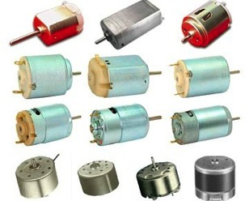
Introduction
Small DC motors can take little current
but they normally can’t be driven directly from the output pin of an
Arduino or any other embedded processor. Therefore they need some sort
of driver or current boost before you can control them. Also motors are a
great source of interference that can make the rest of your electronics
misbehave. This can be countered by isolating the motor power supply to
a greater or lesser extent.
Basic Driving
A motor will often need a bigger voltage
as well as current than can be supplied directly so an external power
supply is normally used to provide this. The simplest way of driving a
motor is directly through a transistor, as shown here:-
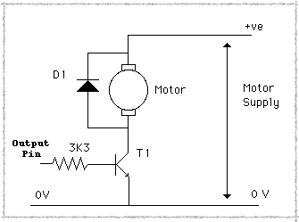
An output pin from the Arduino is
connected through a resistor to the base of a transistor, the motor sits
between the collector and the positive external power supply and the
emitter is connected to ground, earth or zero volts to give the line
just three commonly interchangeable names. Note that the ground has to
be common (connected together) between your external supply and the
Arduino. A motor is basically and electromagnet or coil, in electronic
terms this is an inductor. When you suddenly remove the power, that is
turn it off, the magnetic field collapses because there is no current
flowing to keep it up. This collapsing field then produces a “back EMF”
or reverse voltage that can be several hundred volts in size. This has
the potential to damage the electronics connected to the rest of the
circuit and so it is normal practice to place a diode across the motor,
in order to short this out and protect you other components. This is
most important and any sort of rectifier diode will do like the popular
1N4004 or similar. The value of the base resistor is something that
troubles some beginners, however, it is not too critical. It has to
limit the base current, but not so much that the transistor doesn't turn
on fully. Basically the base current times the transistor gain has to
equal or exceed the current taken by the motor. However, if the motor
current is high your transistor will have to have a high collector
current rating and some transistors of this type don’t have a very high
gain. If that is the case you can use this:-
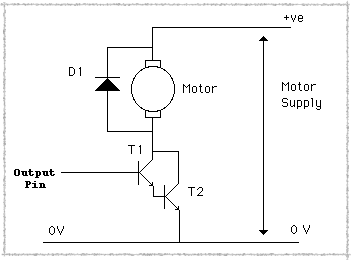
Here two transistors have been used in a
configuration known as a Darlington pair. The load current is taken by
T2 and T1 is used to turn it on. The effective gain of this is found by
multiplying the gains of the two individual transistors together. Also
note here that the base resistor can be omitted, this is because the
voltage on the base of T1 when this arrangement is on is about 1.4v,
which s high enough not to mess up logic output. For the high current
outputs of the Arduino however you do need a resistor.
However, this direct connection to the
Arduino is likely to cause interference problems, even though the power
supplies are separate they have, and they need, a common ground. You can
find a fuller discussion of de-coupling here but this is the sort of thing you can try:-
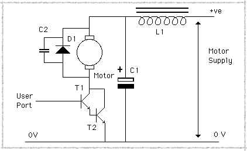
Basically a small capacitor across the
motor will cut down some of the noise generated and the inductor and
capacitor will stop the noise spreading to the rest of the circuits. The
actual values of the capacitor are not too critical suffice it to say
the bigger of each the better, start off with a .1uF capacitor across
the motor and 47uF capacitor and 1mH inductor. You can miss the inductor
out but don’t skimp on the capacitor.
Now while this isolates the motor’s
power supply to some extent it doesn't isolate it completely, there is
always that common ground connecting them together. If you require total
isolation you will have to use another technique, the two I want to
look at here are mechanical isolation, and optical isolation.
Optical Isolation
Let’s look at optical isolation first
this uses a component called an opto-isolator, I think you might be able
to work out how it got it’s name. It consists of a light emitting diode
(LED) next to a photo transistor. You pass current through the LED, it
lights up and shines onto the photo transistor which then conducts or
turns on. So the photo transistor needs no electrical contact with the
circuit controlling it. A typical arrangement is shown here:-
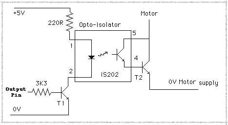
I have omitted the motor for simplicity
but T2 controls the motor just like in the previous diagrams. There is a
220R (220 ohm) resistor to limit the current flow in the LED and a base
resistor in T1, but there is no common ground needed. This keeps the
two power supplies separate and prevents any conducted interference
entering the Arduino or other circuits. There are lots of different
opto-isolator available having different transfer characteristics, but
most would work in this sort of application. You could even make your
own using an LED and photo transistor placed in a light proof tube.
Speed Control
All of the above techniques can be used
along with a PWM signal to control the motor’s speed. PWM stands for
Pulse Width Modulation, and is a signal that stays not at a constant
level but is rapidly being turned on and off. The ratio of the on time
to the off time determines how much power you are driving into the load
and hence how fast it goes, like this:-
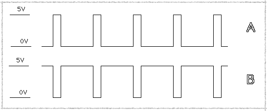
Waveform A is off most of the time and
so will result in a slow speed, where as waveform B is on most of the
time and so the motor will run faster. If this causes the motor to buzz
then place a capacitor across the motor to smooth it out. Some of the
Arduino outputs can be used as PWM outputs, this varies with the
different model of Arduino so look to see what pins are supported by
yours.
However, you can’t use this speed control method with the following techniques.
Mechanical Isolation
Now let’s turn our attention to
mechanical isolation or as it is better known a relay. This is an
electro-magnet that attracts a lever connected to some contacts. On most
relays there are at least five connections, two for the coil, and three
for a single-pole, change-over
set of contacts. These are labelled common, normally open and normally
closed. In this context “normally” means the state the relay is in when
the coil is not energised. So there is a connection between the common
and normally closed even if the relay’s coil is not connected to
anything. Incidentally the overwhelming majority of relays do not care
what direction the current flows, so you can connect the coil up any way
round. Using a relay you would wire it up like this:-
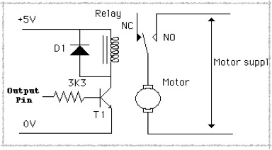
Note there is a diode across the relay
coil just like the motor because the coil is an inductor. Note if you
want the motor to be on all the time but have the Arduino turn it off
then just use the NC (normally closed) contacts to connect up the motor
power supply.
Some relays have more than one set of
contacts, these are known as “poles”, if you have a relay with two poles
you can control the direction of the motor by wiring it up like this:-
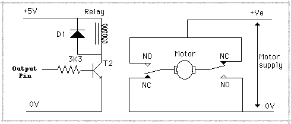
This has the current flowing through the
motor in one direction when the relay is energised and the other
direction when it is not, and the direction of current flow determines
the direction of motor rotation. Note the motor is always on, if you
want control of the direction and the motor and determine if the motor
is on or off you need another relay. It only needs to be a single pole
relay, you connect it like this:-
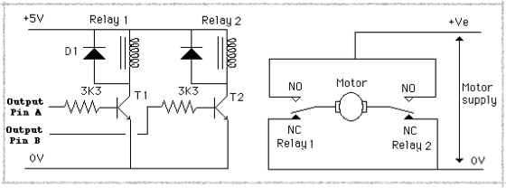

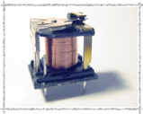
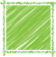
Motors 1